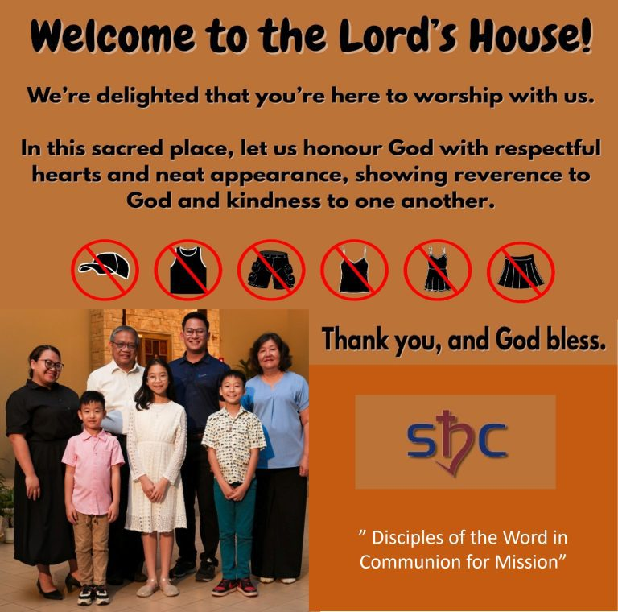

Sacred Heart Church · Kota Sentosa
Disciples of the Word in
Communion for Mission.
Welcome to our parish in Kota Sentosa, Kuching. Join us in faith, fellowship, and service.
View Mass ScheduleJoin us in the celebration of the Eucharist at our main parish and outstation.
Begin your spiritual journey. Find guidance, schedules, and registration forms for the Rite of Christian Initiation of Adults.
Get RCIA FormsIn times of loss, our parish is here to support you. Access immediate information regarding funeral masses, blessings, and pastoral care.
View Funeral Guide
Sacred Heart Church Kota Sentosa is a vibrant Catholic parish located in Kuching, Sarawak. We are a community dedicated to faith, fellowship, and service.
Guided by our vision and mission, we strive to be disciples of the Word, working together in communion to fulfill our mission of spreading love and faith in our daily lives.
Meet Our Priests"A parish family rooted in Christ’s love, empowered by the Holy Spirit to lead, serve and proclaim the Gospel."
Reverence in the House of God
To maintain the sanctity of the Holy Mass, we kindly request all parishioners and visitors to observe proper church etiquette and dress modestly.
